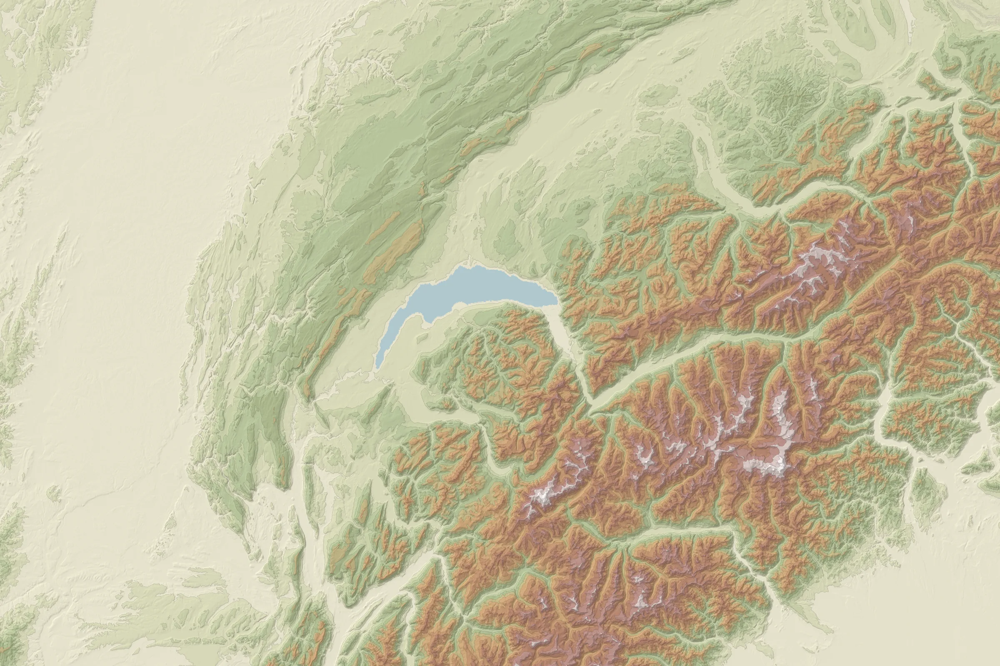
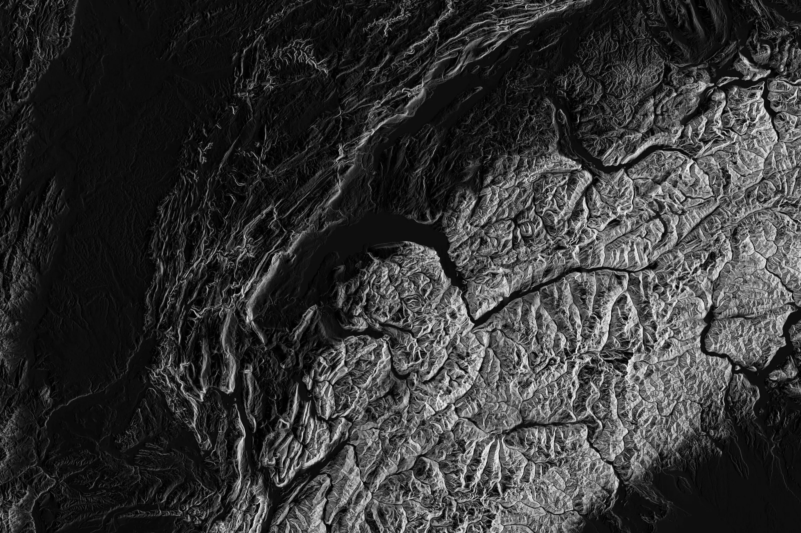
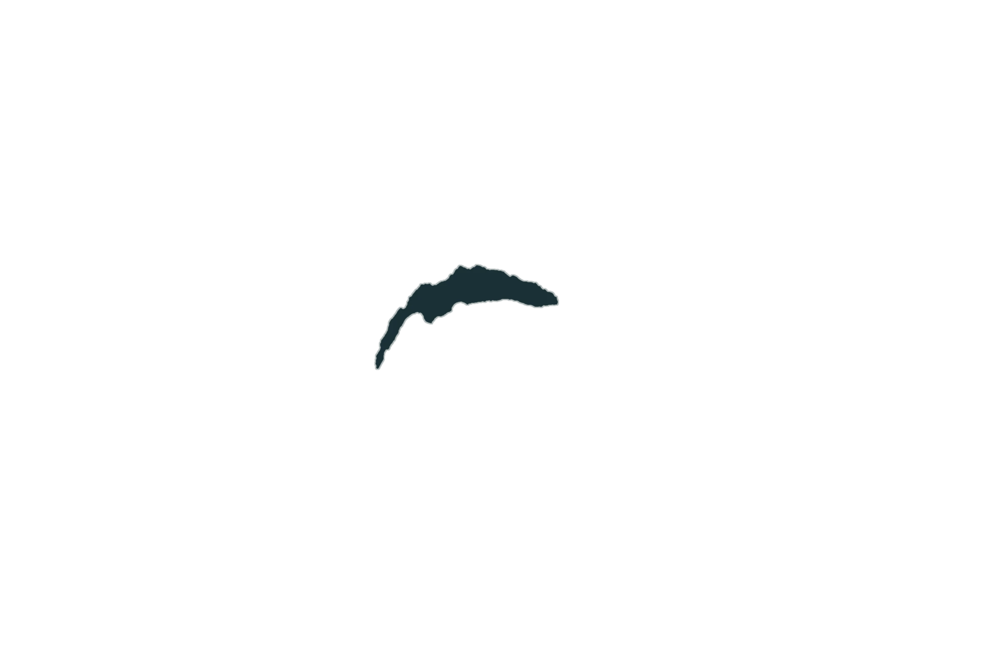

Geneva

GenevaGaia Analytica
Practical geospatial solutions for informed action
Maps, data systems and spatial analysis for public health, humanitarian response and critical infrastructure.

Geneva

GenevaPractical geospatial solutions for informed action
Maps, data systems and spatial analysis for public health, humanitarian response and critical infrastructure.
Side projects
Experiments in maps, data and AI